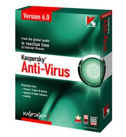
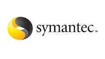
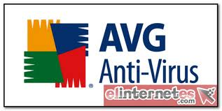
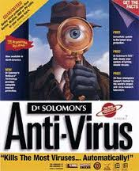
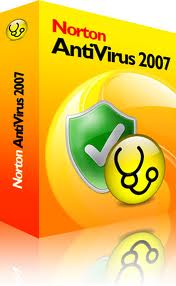
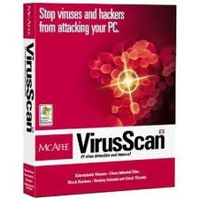

| Clasificación de los Antivirus |
Imagen |
Nombre |
Características
|
| 
| Kaspersky Antivirus |
Kaspersky Lab es una organización internacional. Con sede en Rusia, la organización cuenta con delegaciones en el Reino Unido, Francia, Alemania, Japón, Estados Unidos y Canadá, países del Benelux, China, Polonia, Rumanía, Portugal y España. El Centro europeo de investigación antivirus, fue constituido en Francia. La red de colaboradores de Kaspersky Lab incluye más de 500 organizaciones a lo largo del mundo.
Un análisis avanzado de la actividad virológica le permite a Kaspersky ofrecer una protección completa contra amenazas actuales e incluso futuras. Kaspersky Lab fue una de las primeras empresas de este tipo en desarrollar estándares para la defensa antivirus. Numerosos fabricantes conocidos utilizan el núcleo de Kaspersky Anti-Virus: Nokia ICG (EEUU), F-Secure (Finlandia), Aladdin (Israel), Sybari (Estados Unidos), Deerfield (EEUU), Alt-N (EEUU), Microworld (India) y BorderWare (Canadá), ZyXEL (Taiwán).
La base antivirus de Kaspersky Lab se actualiza cada hora. La organización ofrece a sus usuarios servicio de asistencia técnica de 24 horas, disponible en numerosos idiomas. |
|  |
Symantec |
Protección completa: integra las mejores tecnologías para detener las amenazas de seguridad, incluso las procedentes de atacantes desconocidos y peligrosos, antes de que penetren en la red, detecta y bloquea software malicioso en tiempo real, incluidos virus, gusanos, troyanos, spyware, adware y rootkits.
Symantec redefine una vez mas el concepto de protección de infraestructura Informática en las organizaciones. Incorporando ahora nuevas características como el respaldo de los equipos (Backup Exec System recovery) El nuevo Endpoint Protection v 11.0 entrega una protección inigualable contra el malware en un solo agente que combina el Antivirus de Symantec con mecanismos avanzados de protección de amenazas. Así usted no tiene que comprar un producto independiente para cada tipo de riesgo. |
|
F- Secure |
Es el mejor antivirus existente en el mercado.
Tanto que incluso los desarrolladores de virus lo recomiendan y comienzan a desarrollar virus dedicados especialmente a atacar este antivirus, lo cual puede interpretarse como un algo para la gente de Datafellows.
Producto de la unión de F-Prot y AVP combina la potencia de uno con el análisis del otro, ofreciendo un antivirus robusto, rápido y fiable.
Es capaz de escanear redes enteras y su base de datos viral está muy actualizada.
Es el antivirus que más virus detecta y elimina, con una heurística muy fiable. |
|  |
Dr. Solomon's |
Un clásico entre los clásicos que sabe mantenerse a la cabeza con poderosas razones.
A pesar de no ser tan rápido como el F-Secure el antivirus del Dr. Solomon es capaz de detectar y eliminar gran cantidad de virus y con gran fiabilidad.
Su heurística también esta muy trabajada y en pocas ocasiones dará falso positivos. |
|  |
Norton Antivirus |
Un clásico entre los clásicos que sabe mantenerse a la cabeza con poderosas razones.
A pesar de no ser tan rápido como el F-Secure el antivirus del Dr. Solomon es capaz de detectar y eliminar gran cantidad de virus y con gran fiabilidad.
Su heurística también esta muy trabajada y en pocas ocasiones dará falso positivos. |
|  |
McAfee: VirusScan |
Otro de los grandes clásicos que tampoco ha sabido mantenerse a la altura de las circunstancias.
El fallo de este producto es también la falta de actualización de las bases de datos de virus que se centra sobre todo en virus "regionales". |
| |
Panda Security |
Panda Security es una empresa informática española con sede en Bilbao especializada en la creación de soluciones de seguridad informática. Centrada inicialmente en la producción de software antivirus, la compañía ha expandido su línea de aplicaciones para incluir cortafuegos, aplicaciones para la detección de spam y spyware, tecnología para la prevención del cibercrimen, aplicaciones de seguridad y otras herramientas de seguridad y gestión para empresas y usuarios domésticos. |
| Estos y muchos más programas antivirus existen selecciona uno de ellos y protege a tú ordenador de los más peligrosos virus informáticos que destruyen tú información en cuestión de segundos |